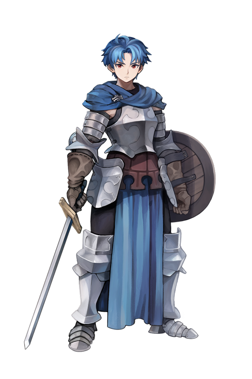

detalle

Alain
Principe heredero del reino caido Cornia
Príncipe heredero del reino caído de Cornia e hijo de su reina, Ilenia. Tras perder a su madre en la rebelión de Valmore, Josef lo llevó a la isla de Palevia, donde le enseñó espada y estrategia hasta los 17 años.
Clase
Lord